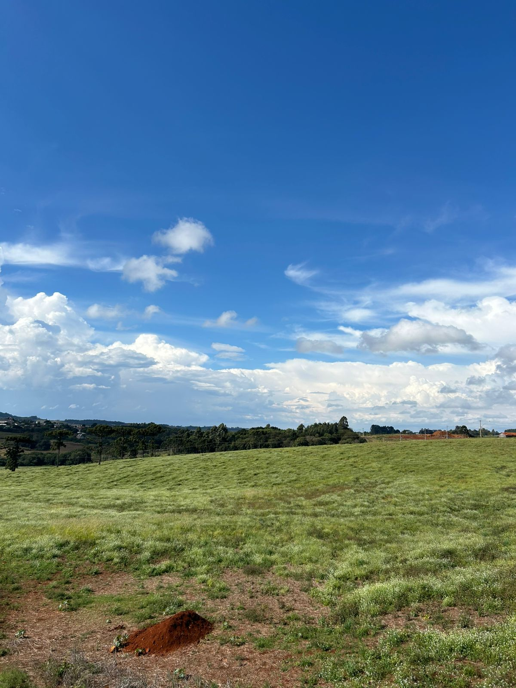
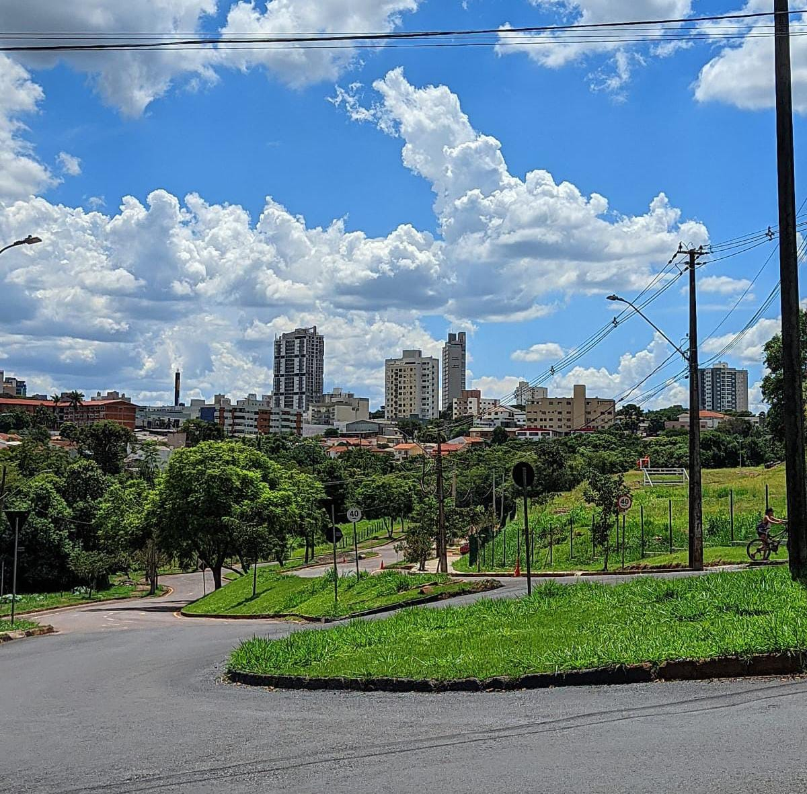
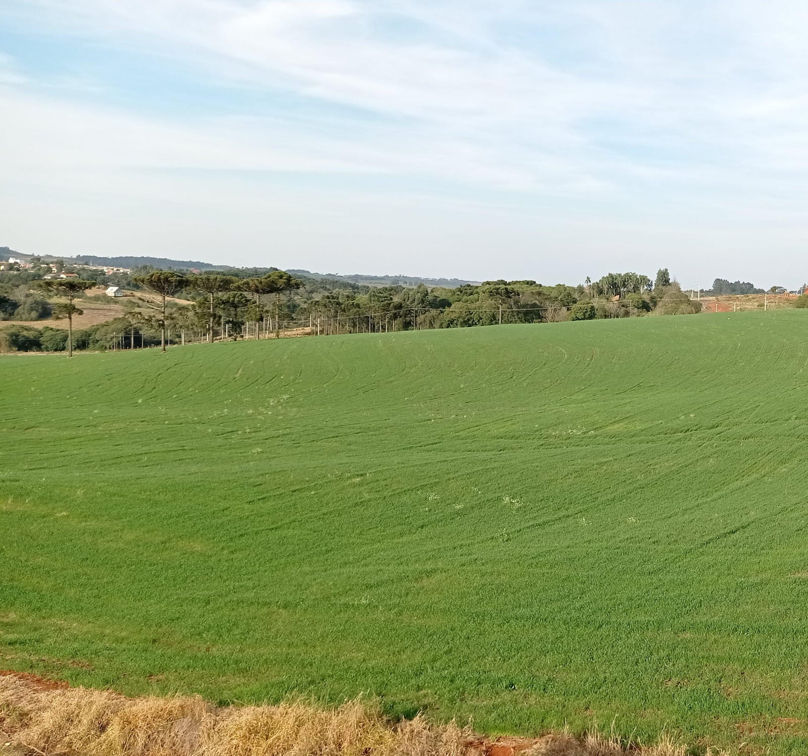

Desvendando as Zonas Rurais e Zonas Urbanas: Mundos de Oportunidades


O Impacto da Zona Urbana no Desenvolvimento Rural
A Essência e a Inovação da Zona Rural

Explore Nossas Áreas Temáticas Centrais
Acessibilidade e Gestão da Água
Saiba mais sobre ÁguaEnergia Rural Sustentável
Saiba mais sobre EnergiaProdução, Industrialização e Inovação
Saiba mais sobre ProduçãoSustentabilidade
Saiba mais sobre SustentabilidadeEntre em Contato Conosco 📧
Envie suas dúvidas, sugestões ou feedback. Sua opinião é importante! 📝